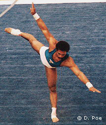

Casimiro Suarez (CUB)
1979 and 1983 Pan American Games AA Champion

Suarez was born on March 4, 1962 in Matanzas Province.
Competition Results
1978
Jr. Friendship Tournament (Druzhba): 1st V, 3rd FX, 5th HB
World Championships: 113th AA (prelims)
1979
Chunichi Cup: 16th AA
Moncada Cup: 1st AA
Moscow News: 24th AA
Pan American Games: 1st Team, 1st AA, 1st FX, 1st V
Riga International: 1st FX, 2nd V
Tokyo Cup: 5th FX, 6th HB
USSR Spartakiade (Pre-Olympics): 12th AA, 4th HB, 5th FX, 5th V
World Championships: 13th Team
1980
Moncada Cup: 1st AA
Moscow News International: 8th AA
Olympic Games: 19th AA, 6th HB
Riga International: 2nd FX, 3rd V
1981
Moncada Cup: 1st AA
Moscow News International: 7th AA
Riga International: 5th AA
University Games: 14th AA, 5th V, 7th R, 8th HB
World Championships: 12th Team, 31st AA, 4th V
1982
Blume Memorial: 2nd AA
Central American Games: 1st AA, 1st FX, 1st V, 1st PB, 1st HB
Champions All: 9th AA
Coca-Cola International: 4th AA, 1st V, 3rd FX
CUB Championships: 1st AA
Moncada Cup: 3rd AA
1983
Hungarian International: 4th AA, 1st FX, 2nd V, 2nd HB
Pan American Games: 1st Team, 1st AA, 1st FX, 1st R, 1st V, 1st HB,
3rd PB
World Championships: 12th Team, 15th AA, 6th FX
1984
American Cup: 8th AA
Cottbus International: 3rd AA, 1st HB, 2nd V, 3rd FX, 3rd R
CSSR Spartakiade (Olomouc): 11th AA, 3rd V
Hungarian International: 12th AA
1985
University Games: 17th AA, 1st V, 6th FX
1986
Cottbus International: 8th AA
DTB Cup: 5th AA, 1st HB, 3rd R, 3rd V, 4th FX, 5th PB
French International: 2nd FX
Gander Memorial: 6th AA
Hungarian International: 2nd AA
Moncada Cup: 1st AA
1987
Pan American Games: 2nd AA, 1st FX, 1st V, 2nd PB, 2nd HB
Shengyang International: 4th AA
World Championships: 11th Team, 16th AA, 5th HB
1988
American Cup: 7th AA
Hungarian International: 1st V, 4th PB, 5th HB
1989
Cottbus International: 8th AA
DTB Cup: 21st AA, 1st HB
Gander Memorial: 8th AA
World Championships: 11th Team, 31st AA
1990
Caribbean Games: 6th AA
Ontario Cup: 15th AA
1991
Pan American Games: 1st Team, 2nd V
This page was created on December
19, 2004 and was last updated on September 16, 2005.
© Gymn Forum